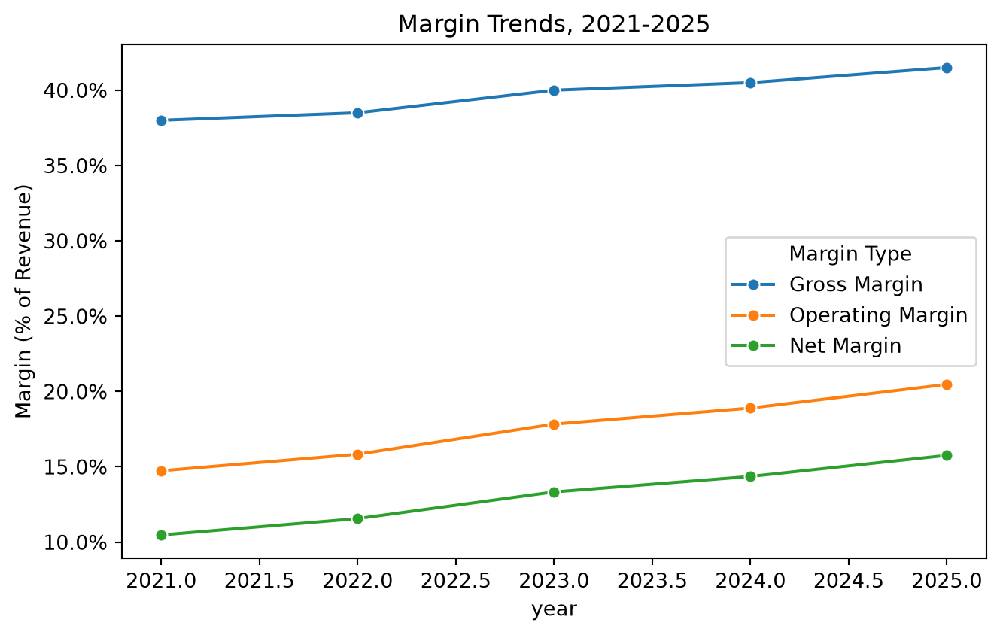
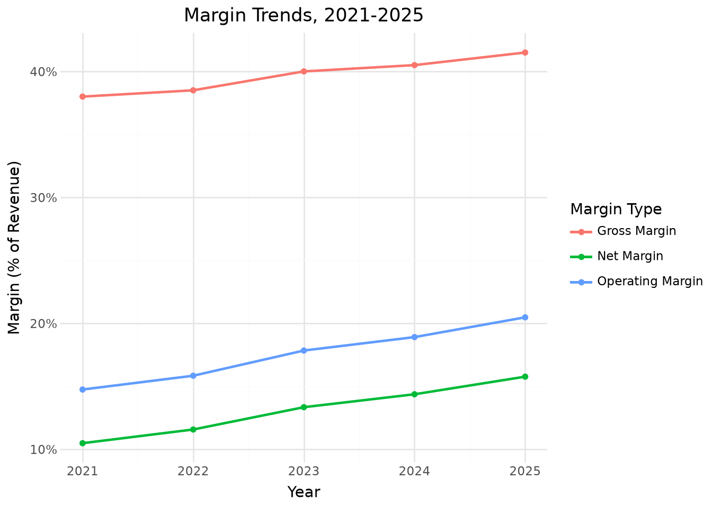
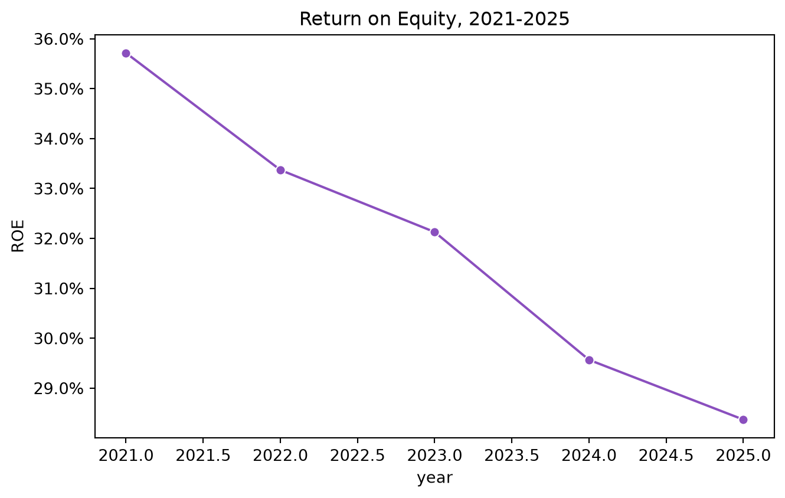

By the end of this chapter, you should be able to:
Load and structure multi-year financial statement data for analysis
Perform horizontal (trend) analysis and vertical (common-size) analysis
Compute liquidity, profitability, leverage, and efficiency ratios
Build a reusable function that automates ratio calculations across any set of financial statements
Apply DuPont decomposition to explain why return on equity changed, not just that it changed
Interpret ratio trends critically, rather than treating any single ratio as a verdict on its own
Understand the siginicance of financial statments for capital markets efficiency
7.1 From General Ledger to Financial Statements
Chapters 3 and 4 traced how transactions flow from the general ledger into a trial balance. Financial statements are the next and final step in that chain: the income statement summarizes revenue and expense activity for a period, and the balance sheet summarizes assets, liabilities, and equity at a point in time.
This chapter works with five years of financial statements (2021–2025) for a fictional company, “Ledger & Co.,” stored in income_statement.csv and balance_sheet.csv. Unlike the transaction-level data from earlier chapters, this data is already fully summarized — each row is one fiscal year, and each column is a financial statement line item.
This chapter uses pandas only. Financial statement data is small by nature — five rows, a few dozen columns — so polars’ performance advantages (Chapter 4) don’t come into play here the way they did with transaction-level general ledger data. Feel free to redo any of this chapter’s calculations in polars as practice, but there’s no analytical reason to prefer it for a dataset this size.
Before calculating anything, it’s worth confirming the balance sheet actually balances — a basic sanity check you should run on any real financial statement data before trusting it:
Revenue grew between 12% and 15% annually, but notice that net income grew faster than revenue every year (e.g., 27.5% net income growth vs. 15.5% revenue growth in 2022) — a sign that profitability is improving, not just sales volume. We’ll confirm this more precisely with margin ratios shortly.
7.2.1 Indexed Trend Analysis
A related technique sets the earliest year to 100 and expresses every later year relative to that baseline — useful for comparing the relative growth rate of several line items on one consistent scale, regardless of their different starting dollar amounts.
indexed_pl = ( inc_pl .sort("year") .with_columns( ( pl.col(["Revenue", "Cost of Goods Sold", "Net Income"])/ pl.col(["Revenue", "Cost of Goods Sold", "Net Income"]).first()*100 ).round(1) ) .select(["Revenue", "Cost of Goods Sold", "Net Income"]))indexed_pl
shape: (5, 3)
Revenue
Cost of Goods Sold
Net Income
f64
f64
f64
100.0
100.0
100.0
115.5
114.5
127.5
129.8
125.6
165.2
145.2
139.4
199.1
164.3
155.0
247.1
By 2025, revenue has grown to 164% of its 2021 level, while net income has grown to 247% of its 2021 level — again showing that profitability is compounding faster than the top line.
7.3 Vertical (Common-Size) Analysis
Vertical analysis expresses every line item as a percentage of a single base figure within the same year — typically revenue for the income statement, and total assets for the balance sheet. This is especially useful for comparing structure across years (or across companies of different sizes) without dollar amounts getting in the way.
Cost of Goods Sold has fallen from 62.0% of revenue in 2021 to 58.5% in 2025 — a steady margin improvement, likely reflecting economies of scale or improved purchasing terms.
Cash has grown from 22.9% to 53.3% of total assets over five years, while receivables, inventory, and PP&E have all shrunk as a share of the balance sheet. On its own, this looks like a strong cash position — but as we’ll discuss later in this chapter, a rapidly growing cash pile can also raise a legitimate question: is management deploying capital efficiently, or simply letting cash accumulate?
7.4 Ratio Analysis
Ratios distill financial statement data into standardized measures that are comparable across time periods and even across companies. We’ll compute four common categories.
7.4.1 Liquidity Ratios
Liquidity ratios measure a company’s ability to meet short-term obligations. Liquidity ratios compare what a business owns against what it owes in the near term. Liquidity ratios include current ratio, quick ratio1 (acid-test ratio), and cash ratio. Investors use these ratios to assess if a company is at risk of bankruptcy or financial distress.
merged = inc.merge(bs, on="year")current_ratio = merged["Total Current Assets"] / merged["Total Current Liabilities"]quick_ratio = (merged["Cash"] + merged["Accounts Receivable"]) / merged["Total Current Liabilities"]pd.DataFrame({"year": merged["year"], "Current Ratio": current_ratio, "Quick Ratio": quick_ratio}).round(2)
year
Current Ratio
Quick Ratio
0
2021
4.05
2.86
1
2022
4.66
3.51
2
2023
5.52
4.41
3
2024
6.39
5.32
4
2025
7.37
6.33
ratios_pl = ( inc_pl .join(bs_pl, on="year", how="inner") .select("year", ( pl.col("Total Current Assets")/ pl.col("Total Current Liabilities") ).round(2).alias("Current Ratio"), ( (pl.col("Cash") + pl.col("Accounts Receivable"))/ pl.col("Total Current Liabilities") ).round(2).alias("Quick Ratio"), ))ratios_pl
shape: (5, 3)
year
Current Ratio
Quick Ratio
i64
f64
f64
2021
4.05
2.86
2022
4.66
3.51
2023
5.52
4.41
2024
6.39
5.32
2025
7.37
6.33
A current ratio above 1.0 generally indicates a company can cover its short-term liabilities with short-term assets. Here, both ratios are comfortably above 1.0 and rising every year — worth a closer look later, since very high liquidity isn’t automatically a good sign either.
7.4.2 Profitability Ratios
Profitability ratios evaluate a company’s ability to generate earnings relative to its revenue, operating costs, assets, and shareholder equity. Generally, higher ratios indicate stronger efficiency, cost control, and financial health.
Profitability ratios are primarily divided into two categories: Margin Ratios (which show how much profit is kept from sales) and Return Ratios (which show how well resources are used to generate returns for investors). Margin ratios include gross profit margin, operating profit margin, and net profit margin. Return ratios include return on assets (ROA), return on Equity (ROE), and return on invested capital (ROIC).
Every profitability margin improved steadily from 2021 to 2025. But look closely at ROE — despite improving margins, ROE actually declines over the same period (35.7% down to 28.4%). This looks contradictory at first glance. We’ll resolve exactly why using DuPont analysis later in this chapter.
7.4.3 Leverage Ratios
Leverage ratios measure how much a company relies on debt financing, and its ability to service that debt. By comparing debt to equity, assets, or earnings, these metrics help investors and analysts assess a business’s solvency, long-term stability, and overall financial risk. Leverage ratios include debt-to-equity ratio, debt-to-asset ratio, debt-to-EBITDA ratio, and interest coverage ratio.
A high leverage ratio indicates a heavy reliance on debt. While this can amplify profits when a company performs well, it also significantly increases the risk of default during economic downturns or periods of low cash flow. A low leverage ratio points to a conservative capital structure with less debt reliance. This often suggests greater financial stability and lower risk of bankruptcy, though it can also signal an inability or reluctance to borrow for growth.
Because acceptable thresholds vary widely by industry—for example, capital-intensive manufacturing or utility companies naturally require more debt than service-oriented firms—these metrics should always be benchmarked against competitors in the same sector.
Debt-to-equity has fallen sharply (from 0.43 to 0.18), and interest coverage has risen from about 10x to nearly 40x — the company has been paying down debt aggressively while growing operating income, substantially reducing its financial risk.
7.4.4 Efficiency Ratios
Efficiency ratios measure how well a company uses its assets to generate revenue. They compare a company’s expenses to its sales or track how quickly it turns assets into cash. Higher turnover ratios and lower expense ratios usually signal strong operational health. Efficiency ratios include asset turnover ratio, inventory turnover ratio, and accounts receivable turnover ratio.
Days Sales Outstanding and Days Inventory Outstanding have both improved (fallen) — the company collects receivables faster and turns over inventory faster in 2025 than in 2021. Yet asset turnover has declined (from 2.09 down to 1.53) — total assets are growing even faster than revenue, largely because of that growing cash balance. This is another thread we’ll pick up in the DuPont section.
7.5 Automating Ratio Calculations
Rather than recomputing each ratio by hand every time you get a new year of data, it’s worth writing a single reusable function.
Writing analysis as a reusable function like this — rather than one-off code you rerun and edit each period — is exactly how analytics work scales in practice. Next quarter’s financial statements can be run through the same compute_ratios() function with zero changes, as long as the column names match. This is also foreshadows the automated reporting techniques in Chapter 14.
Asset Turnover fell (2.09 → 1.53) — assets (mostly that growing cash pile) grew faster than revenue.
Equity Multiplier fell (1.63 → 1.18) — the company relies on much less debt financing than before.
The margin improvement was real, but it was more than offset by the combined effect of falling asset turnover and falling leverage. In other words: the company is becoming more profitable per dollar of sales, but less efficient at using its (growing) asset base, and increasingly equity-financed rather than debt-financed — both of which mechanically pull ROE down, even while the business is arguably getting healthier in other respects.
ImportantWhy This Matters
Reporting “ROE declined from 35.7% to 28.4%” without DuPont context could easily be read as bad news. DuPont decomposition shows that the decline is actually a byproduct of paying down debt and building cash reserves — both generally prudent financial decisions — rather than declining profitability. This is a good example of why a single ratio, in isolation, can mislead; understanding its components tells the real story.
7.7 Visualizing the Trends
A trend that takes several tables to describe in words is often obvious in one chart.
import seaborn as snsimport matplotlib.pyplot as pltimport matplotlib.ticker as mtickermargin_long = ratios.reset_index()[["year", "Gross Margin", "Operating Margin", "Net Margin"]].melt( id_vars="year", var_name="Margin Type", value_name="Value")plt.figure(figsize=(7, 4.5))sns.lineplot(data=margin_long, x="year", y="Value", hue="Margin Type", marker="o")plt.title("Margin Trends, 2021-2025")plt.ylabel("Margin (% of Revenue)")plt.gca().yaxis.set_major_formatter(mticker.PercentFormatter(1.0))plt.tight_layout()plt.show()

from plotnine import*( ggplot(margin_long, aes(x="year", y="Value", color="Margin Type"))+ geom_line(size=1)+ geom_point()+ scale_y_continuous(labels=lambda l: [f"{v:.0%}"for v in l])+ labs(title="Margin Trends, 2021-2025", x="Year", y="Margin (% of Revenue)")+ theme_minimal())

All three margins trend upward and roughly in parallel — visual confirmation that the profitability improvement is broad-based (starting at the gross profit level) rather than coming from just one line item, like a one-time tax benefit.
plt.figure(figsize=(7, 4.5))sns.lineplot(data=dupont, x="year", y="ROE (DuPont)", marker="o", color="#8a4fbe")plt.title("Return on Equity, 2021-2025")plt.ylabel("ROE")plt.gca().yaxis.set_major_formatter(mticker.PercentFormatter(1.0))plt.tight_layout()plt.show()

Seeing the steady ROE decline plotted directly against the improving margins from the chart above makes the apparent contradiction visually obvious — exactly the kind of pattern that should prompt a DuPont-style investigation rather than a surface-level “ROE is getting worse” conclusion.
7.8 Putting It Together: A Financial Health Memo
A typical output of this kind of analysis isn’t just a table of ratios — it’s a short written interpretation for a decision-maker. Here’s a brief example, written the way you might summarize this exact analysis for a manager:
TipSample Memo Excerpt
Ledger & Co.’s profitability has improved steadily over the past five years, with net margin rising from 10.5% to 15.8%, driven by both improving gross margins and declining interest expense. The company has also meaningfully reduced financial risk, cutting debt-to-equity from 0.43 to 0.18 while more than tripling interest coverage. Return on equity has declined over the same period (35.7% to 28.4%), but DuPont analysis attributes this to the combined effect of debt paydown and a growing cash balance — both generally prudent — rather than any underlying weakness in operations. One area worth management’s attention: the current ratio has risen to 7.4x, well above what’s typically needed for liquidity purposes, suggesting cash may be accumulating faster than it’s being deployed into growth, debt reduction, or shareholder returns.
Notice that this memo doesn’t just repeat the numbers — it interprets what they mean together, flags a genuine open question (the growing cash pile) rather than treating every metric as unambiguously good news, and avoids the trap of reporting the ROE decline without its DuPont explanation.
7.9 Why These Numbers Matter to Capital Markets
Every ratio computed in this chapter has a purpose beyond internal analysis: financial statements are the primary channel through which a company communicates its performance to the outside investors, lenders, and analysts who allocate capital in public and private markets. It’s worth stepping back to understand why that communication role matters, and how the specific numbers in this chapter connect to it.
7.9.1 Financial Statements as an Information Bridge
Company managers know far more about their business than outside investors ever can — a gap economists call information asymmetry. Audited financial statements exist largely to narrow that gap: they give outside capital providers a standardized, independently verified basis for judging a company’s performance without needing direct access to its internal records. This is precisely why the audit techniques in Chapter 9 matter so much to capital markets — a number nobody trusts is a number capital markets can’t efficiently price.
7.9.2 Market Reactions to Financial Information
When a company releases financial results, especially quarterly earnings, market prices often move — sometimes sharply — in response. Researchers and practitioners study this using event studies: measuring a stock’s price movement in a narrow window around an announcement to isolate the market’s reaction to the new information specifically, separate from broader market movements. A company that reports earnings above what analysts expected (a positive “earnings surprise”) tends to see its stock price rise; one that misses expectations tends to see it fall — often regardless of whether the absolute numbers were “good” in isolation, since markets are reacting to information relative to what was already priced in.
TipConnect to Practice
This is exactly why the trend and DuPont analysis in this chapter matter more than any single year’s numbers in isolation. A market that already expects margin improvement won’t react much to a company merely delivering it — but the same result would move markets substantially if it arrived as a surprise. Context, not just the raw figure, drives market reaction.
7.9.3 How Ratios Connect to Valuation and the Cost of Capital
The specific ratio categories from this chapter map directly onto how capital markets participants evaluate a company:
Profitability ratios (margins, ROA, ROE) feed directly into valuation multiples like the price-to-earnings (P/E) ratio — equity analysts routinely build forecasts of future margins from exactly the kind of trend analysis performed earlier in this chapter.
Leverage ratios (debt-to-equity, interest coverage) are central to how credit rating agencies assess default risk, which in turn determines a company’s cost of debt — Ledger & Co.’s improving interest coverage (10x to nearly 40x) is exactly the kind of trend that would support a credit rating upgrade and cheaper future borrowing.
Liquidity ratios (current ratio, quick ratio) inform short-term credit risk assessments — lenders extending short-term credit look at these first.
Efficiency ratios (asset turnover, DSO, DIO) help analysts judge whether management is deploying capital productively, directly relevant to whether a stock trades at a premium or discount to its peers.
7.9.4 A Word of Caution: Markets Use More Than Ratios
It would be a mistake to conclude that capital markets simply mechanically calculate ratios and price securities accordingly. A few important caveats:
Financial statements are backward-looking. They report what already happened; markets price what’s expected to happen next. This is why forward guidance, analyst forecasts, and macroeconomic conditions all matter alongside historical ratios.
Accounting numbers involve judgment and estimates, not pure objective fact — recall Chapter 11’s revenue recognition red flags. A market’s confidence in a company’s reporting quality, not just its reported numbers, affects how much weight investors place on them.
Market efficiency is a matter of ongoing academic and practical debate. The Efficient Market Hypothesis, in its various forms, argues that prices reflect available information to different degrees — but the extent to which this holds in practice, and for which markets, remains genuinely contested among finance researchers and practitioners. This book takes no position on that debate; the point relevant here is narrower and less controversial: financial statement information demonstrably influences prices, whatever the underlying market efficiency actually is.
ImportantWhy This Matters for Your Career
Whether you end up in equity research, credit analysis, corporate finance, or audit, the techniques in this chapter are the same ones capital markets participants use every day to translate financial statements into investment, lending, and valuation decisions. Understanding why a ratio matters to a market participant — not just how to calculate it — is what separates mechanical number-crunching from analysis that actually informs a decision.
7.10 Chapter Summary
Horizontal analysis compares a line item across time (dollar and percent change, or indexed to a base year); vertical (common-size) analysis expresses every line item as a percentage of a base figure within the same year.
Liquidity, profitability, leverage, and efficiency ratios each capture a different dimension of financial performance, and no single ratio tells the whole story on its own.
Wrapping ratio calculations in a reusable function (like compute_ratios()) means the same analysis can be rerun on any future period’s data without rewriting code.
DuPont decomposition breaks ROE into net margin, asset turnover, and equity multiplier — essential for explaining why ROE changed, not just that it did, and for avoiding misleading single-ratio conclusions.
A rising ratio isn’t automatically good news (e.g., an extremely high current ratio can signal underused cash) any more than a falling ratio is automatically bad news (e.g., falling ROE driven by prudent deleveraging) — ratio analysis requires interpretation, not just calculation.
These same ratios are the language capital markets use to price securities and assess risk: profitability ratios inform valuation multiples, leverage ratios inform credit ratings and the cost of debt, and market reactions to financial statement releases depend on results relative to expectations, not just the absolute numbers.
7.11 Discussion Questions
Ledger & Co.’s current ratio rose from 4.05 to 7.37 over five years. At what point, if any, does “more liquidity” stop being a good thing? What would you want to know before deciding?
Explain in your own words why ROE declined even though every margin (gross, operating, net) improved over the same period.
If you were advising this company’s CFO, what would you recommend they consider doing with the growing cash balance, and what additional information would you want before making that recommendation?
If Ledger & Co. were a public company and reported this chapter’s 2025 results in line with what analysts already expected, how might the market’s reaction differ from a scenario where these same results arrived as a surprise? What does this imply about the relationship between “good numbers” and “stock price reaction”?
7.12 Exercises
Using compute_ratios(), add one additional ratio of your choice (e.g., Return on Invested Capital, Cash Ratio, or Fixed Asset Turnover) and compute it for all five years.
Perform vertical analysis on the liabilities and equity side of the balance sheet (not just assets, which this chapter covered). How has the company’s financing mix shifted between 2021 and 2025?
Recreate the margin trend chart from this chapter, but plot Return on Assets and Return on Equity together instead of the three margins. What does the widening or narrowing gap between ROA and ROE tell you about leverage over time?
Write your own 150-word financial health memo based on the leverage and efficiency ratios computed in this chapter (rather than the profitability-focused example memo shown above).
The difference between current ratio and quick ratio is that quick ratio is stricter, excluding inventory because it is the least liquid current asset↩︎